ജീവശാസ്ത്രം - X
ജീവന്റെ ജനിതകം 7
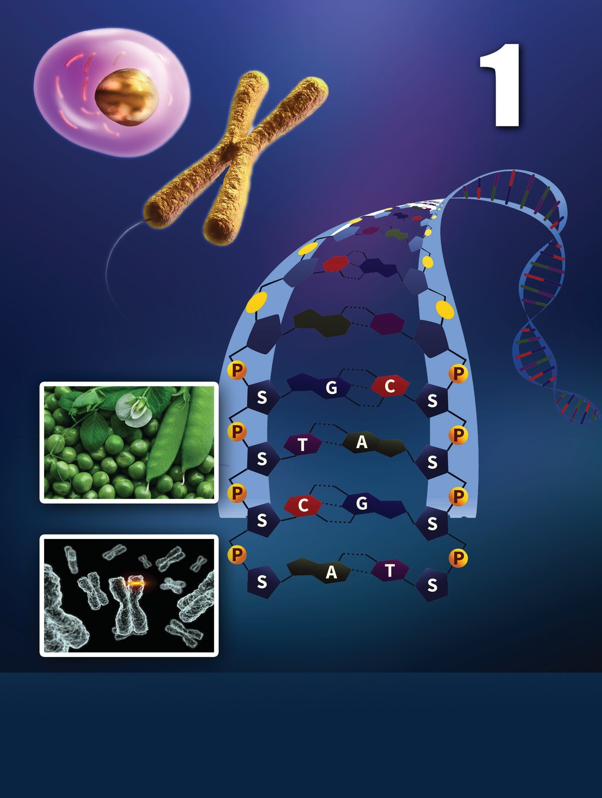
ജീവശാസ്ത്രം - X
ജീവന്റെ ജനിതകം 7


ജീവശാസ്ത്രം - X
ജീൻ എഡിറ്റിങ്ങിന്റെ രീതിശാസ്ത്രം വികസിപ്പിച്ചതിന് രസതന്ത്ര നോോബൽ ജീൻ എഡിറ്റിങ് മേഖലയിലെ സംഭാവനകൾക്ക് 2020-ലെ രസ തന്ത്ര നോോബൽ എമ്മാനുവേൽ കാർപെന്റിയർ, ജെന്നിഫർ എ ഡൗൗഡ്ന എന്നിവർ പങ്കിട്ടു. DNAയിലെ ജീനുകളിൽ അഭി ലക്ഷണീയമായ മാറ്റം വരുത്തു ന്ന ജീൻ എഡിറ്റിങ് പ്രക്രിയയ്ക്ക് ജെന്നിഫർ എമ്മാനുവേൽ എ ഡൗൗഡ്ന കാർപെന്റിയർ ക്രിസ്പർ കാസ് (CRISPR-Cas9) എന്ന സാങ്കേതികവിദ്യയ കണ്ടെ ത്തിയതിനാണ് പുരസ്കാരം. ഇത് ജനിതക രോോഗചികിത്സയിലും കാൻസർ ചികിത്സയിലും വിപ്ലവകരമായ പുരോോഗതി ഉണ്ടാക്കുമെന്ന് പ്രതീക്ഷിക്കുന്നു. കീടങ്ങളെയും രോോഗങ്ങളെയും പ്രതിരോോധിക്കുന്ന വിളകൾ വികസിപ്പിക്കാനും ഇതുപകരിക്കും. രോോഗചികിത്സയിലും മറ്റുംം വിപ്ലവകരമായ മാറ്റങ്ങൾക്കിടയാക്കുന്ന സാങ്കേതികവിദ്യയയുമായി ബന്ധപ്പെട്ട ലേഖനഭാഗം വായിച്ചുവല്ലോോ.
ൂടി ണാൻ കൂ ാ കാ ജീനിനെ ിയില്ലല്ലോോ! കഴി ാണ് നെയാ ങ്ങ എ പിന്നെ എഡിറ്റ് നെ ി തി ഇ ാകുക? ചെയ്യാനാ
നിങ്ങൾക്കും ഈ സംശയം ഉണ്ടായില്ലേ? DNA (Deoxyribo nucleic acid), ജീൻ (Gene) എന്നിവയെക്കുറിച്ചുള്ള
ആഴത്തിലുള്ള ധാരണയാണ് ജീൻ എഡിറ്റിങ്ങിലേക്ക് നയിച്ചത്. 8
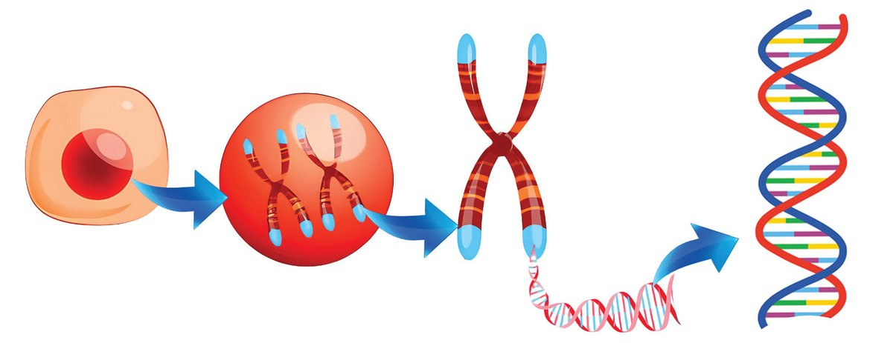
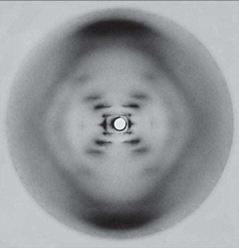

ജീവശാസ്ത്രം - X
DNA, ജീൻ എന്നിവയുടെ സ്ഥാനം, സൂക്ഷ് മ ഘടന എന്നിവ മനസ്സിലാക്കിയാലോോ. ചിത്രീകരണം 1.1 നിരീക്ഷിച്ച് DNAയുടെ സ്ഥാനം സംബന്ധിച്ച് കുറിപ്പ് തയ്യാറാക്കൂ.
ക്രോോമസോംം
കോോശം
ന്യൂക്ലിയസ്
ചിത്രീകരണം 1.1 DNAയുടെ സ്ഥാനം
DNA
DNA യുടെ
സ്ഥാനം മനസ്സിലാക്കിയല്ലോോ. DNA എന്ന ന്യൂക്ലിക്കാസിഡിന്റെ ഘടന അനാവരണം ചെയ്തത് ജീവശാസ്ത്ര പഠനങ്ങളിലെ ഏറ്റവും വലിയ കുതിച്ചുചാട്ടങ്ങളിലൊൊന്നായിരുന്നു.
DNAയുടെ ഘടന (Structure of DNA) 1953-ൽ ജെയിംസ് വാട്സണും ഫ്രാൻസിസ് ക്രിക്കും DNAയുടെ ചുറ്റുഗോോവണി മാതൃക (Double helix model) അവതരിപ്പിച്ചു.
റോോസലിൻഡ് ഫ്രാങ്ക്ലിൻ, മോോറീസ് വിൽക്കിൻസ്, എന്നിവരുടെ എക്സ്റേ പഠനങ്ങളെ ആസ്പദമാക്കിയാണ് DNAയുടെ ഘടന ജെയിംസ് വാട്സണും ഫ്രാൻസിസ് ക്രിക്കും നിർദേശിച്ചത്. റോോസലിൻഡ് ഫ്രാങ്ക്ലിൻ എടുത്ത DNAയുടെ എക്സ്-റേ ഡിഫ്രാക്ഷൻ ചിത്രങ്ങളിൽ പ്രശസ്തമായ ‘ഫോോട്ടോോ 51’എന്ന ചിത്രത്തിൽ നിന്നാണ് ഈ കണ്ടെത്തലിനിടയാക്കിയ നിർണ്ണായക വിവരങ്ങൾ ലഭിച്ചത്. 1958 ൽ റോോസലിൻഡ് ഫ്രാങ്ക്ലിൻ 37-ആം വയസ്സിൽ അന്തരിച്ചു. DNAയുടെ ചുറ്റുഗോോവണി മാതൃക കണ്ടെത്തിയതിന് ജെയിംസ് വാട്സൺ, ഫ്രാൻസിസ് ക്രിക്ക്, മോോറിസ് വിൽക്കിൻസ് എന്നിവർക്ക് 1962 ൽ മെഡിസിനുള്ള നോോബൽസമ്മാനം ലഭിച്ചു.
മോോറിസ് ഫ്രാൻസിസ് റോോസാലിൻഡ് വിൽക്കിൻസ് ക്രിക്ക് ഫ്രാങ്ക്ലിൻ 1920-1958
1916-2004
1916-2004
9
ജെയിംസ് വാട്സൺ 1928
ഫോോട്ടോോ 51

ജീവശാസ്ത്രം - X
ചിത്രീകരണം 1.2 വിശകലനം ചെയ്ത് DNAയുടെ ഘടന സംബന്ധിച്ച് ധാരണ കൈവരിച്ച് വർക്ക്ഷീറ്റ് 1.1 പൂർത്തിയാക്കൂ. പഞ്ചസാര, ഫോോസ്ഫേറ്റ് എന്നിവ ചേർന്നുണ്ടാകുന്നു. ഇഴകൾ
G A
നൈട്രജൻ ബേസുകൾ
C
A T G C
T
C
G
A
T
അഡിനിൻ തൈമിൻ ഗ്വാനിൻ സൈറ്റോോസിൻ
പഞ്ചസാര തന്മാത്ര ഫോോസ്ഫേറ്റ് തന്മാത്ര
പടികൾ നൈട്രജൻ ബേസുകൾ ജോോടി ചേർന്നുണ്ടാകുന്നു.
ന്യൂക്ലിയോോടൈഡ് (Nucleotide)
DNA യുടെ
ചുറ്റുഗോോവണി മാതൃക
DNAയുടെ അടിസ്ഥാന നിർമ്മാണ ഘടകം.
ഫോോസ്ഫേറ്റ്
ഓരോോ ന്യൂക്ലിയോോടൈഡും ഒരു ഡിഓക്സി റൈബോോസ് പഞ്ചസാര, ഒരു ഫോോസ്ഫേറ്റ് ഗ്രൂപ്പ്, ഒരു നൈട്രജൻ ബേസ് എന്നീ ഘടകങ്ങളാൽ നിർമ്മിതമാണ്
ന്യൂക്ലിയോോടൈഡുകളെ പരസ്പരം ബന്ധിപ്പിക്കുന്ന ബോോണ്ടുകളുടെ രൂപീകരണത്തിൽ പങ്കെടുക്കുന്നു ഡിഓക്സിറൈബോോസ് പഞ്ചസാര 5 കാർബൺ പഞ്ചസാര
ചിത്രീകരണം 1.2
DNAയുടെ ഘടന
10
നൈട്രജൻ ബേസ് നൈട്രജൻ അടങ്ങിയ ആൽക്കലി സ്വവഭാവമുള്ള സംയുക്തം


ജീവശാസ്ത്രം - X
വർക്ക്ഷീറ്റ് 1. DNA യിലെ ഇഴകളുടെ എണ്ണം 2. ഇഴകൾ നിർമ്മിച്ചിരിക്കുന്ന തന്മാത്രകൾ 3. പടികൾ നിർമ്മിച്ചിരിക്കുന്ന തന്മാത്രകൾ 4. വിവിധ തരം നൈട്രജൻ ബേസുകൾ 5. പടികൾ രൂപപ്പെടുന്ന വിധം 6. നൈട്രജൻ ബേസുകൾ ജോോടി ചേരുന്ന വിധം 7. ന്യൂക്ലിയോോടൈഡിലെ തന്മാത്രകൾ
വർക്ക്ഷീറ്റ്
1.1
DNAയുടെ ഘടന
ലഭ്യയമായ പാഴ്വസ്തുക്കൾ ഉപയോോഗിച്ച് DNAയുടെ ചുറ്റുഗോോവണി മാതൃക തയ്യാറാക്കി ക്ലാസിൽ പ്രദർശിപ്പിക്കൂ. DNA യുടെ വലുപ്പം
ഓരോോ ക്രോോമസോോമിലെയും DNAക്ക് ഏകദേശം 2 ഇഞ്ച് (5 cm) നീളമുണ്ടാകും. ഒരു മനുഷ്യയകോോശത്തിലെ, 46 ക്രോോമസോോമുകളി ലെയും DNAകൾ ചേർന്നാല് ഏകദേശം 6 അടി നീളം വരുംം (2m). മനുഷ്യയശരീരം ട്രില്യയൺ (ഒരു ലക്ഷം കോോടി) കണക്കിന് കോോശങ്ങ ളാൽ നിർമ്മിതമാണ്. എല്ലാ കോോശത്തിലെയും ഡിഎൻഎകളെ കൂട്ടിയോോജിപ്പിച്ചാല് അത് ഏകദേശം 67 ബില്യയൺ (1 ബില്യയൺ = 100 കോോടി) മൈൽ വരുംം. ഇത് ഭൂമിയെ രണ്ട് ദശലക്ഷത്തിലധി കം തവണ ചുറ്റാൻ പര്യാാപ്തമാണ്! Aയെ DN യ ലെ ി വലി ശങ്ങളി ൽ ുകോോ ുകളി ഇത്രയും ന്ന കുഞ്ഞു ിക്കു ക്രോോമസോോമു നെ? ങ്ങ ഉൾക്കൊൊള്ളി തെ
കുട്ടിയുടെ സംശയം ശ്രദ്ധിച്ചല്ലോോ. ചിത്രീകരണം 1.3, വിവരണം എന്നിവ സൂചകങ്ങളുടെ അടിസ്ഥാനത്തിൽ വിശകലനം ചെയ്ത് കുട്ടിയുടെ സംശയത്തിന് ഉത്തരം കണ്ടെത്തൂ. 11
സാധാരണ NA D പഞ്ചസാരയും സാര യിലെ പഞ്ച തന്മാത്രയും എപ്രകാരം വ്യയത്യാസപ്പെ? ു ട്ടിരിക്കുന്നു കണ്ടെത്തൂ.
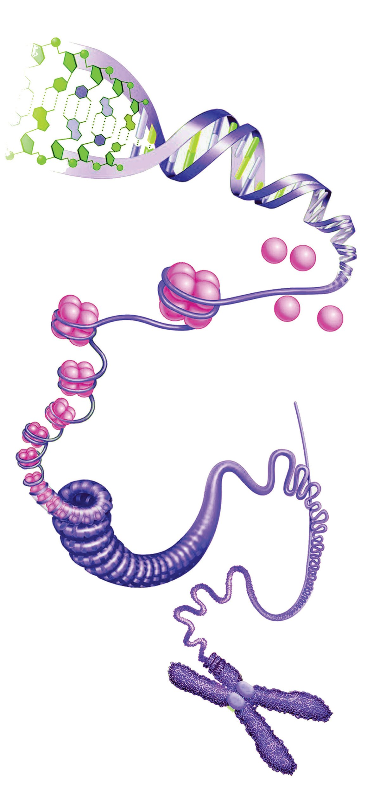

ജീവശാസ്ത്രം - X
ക്രോോമസോംം (Chromosome)
DNA
ഹിസ്റ്റോോൺ പ്രോോട്ടീൻ ഹിസ്റ്റോോൺ ഒക്റ്റാമർ
ന്യൂക്ലിയോോസോംം
DNAയും ഹിസ്റ്റോോണുകൾ എന്ന പ്രോോട്ടീനുകളുമാണ് മുഖ്യയ മായും ക്രോോമസോോമിലുള്ളത്. എട്ട് ഹിസ്റ്റോോണുകൾ ഒന്നിച്ചു ചേർന്ന് ഒരു ഹിസ്റ്റോോൺ ഒക്റ്റാമർ രൂപപ്പെടുന്നു. ഈ ഒക്റ്റാമറിനെ DNA ഇഴകൾ വലയം ചെയ്ത് ന്യൂക്ലിയോോസോംം എന്ന ഘടന ഉണ്ടാകുന്നു. നിരവധി ന്യൂക്ലിയോോസോോമു കളെ അടുക്കിച്ചേർത്ത് ചുരുളു കളാക്കിയും ന്യൂക്ലിയോോസോോ മുകളുടെ ശൃംഖലയെ വീണ്ടും ചുരുളുകളാക്കിയുമാണ് ക്രോോമസോോമുകൾ ഉണ്ടാകു ന്നത്. ഒരു ക്രോോമസോോമിനെ സെൻട്രോോമിയർ വഴി ബന്ധി പ്പിച്ചിരിക്കുന്ന ഭാഗങ്ങളാണ് ക്രൊൊമാറ്റിഡുകൾ.
സൂചകങ്ങൾ ക്രൊൊമാറ്റിൻ ജാലികയും ം ക്രോോമസോോമും തമ്മിലുള്ള ്? ബന്ധമെന്ത് കണ്ടെത്തൂ.
ചിത്രീകരണം 1.3
സെൻട്രോോമിയർ
y ക്രോോമസോോമിന്റെ നിർമ്മാണ ഘടകങ്ങൾ y ഹിസ്റ്റോോണും ന്യൂക്ലിയോോസോോമുംം y ക്രോോമസോോമിന്റെ രൂപപ്പെടൽ
ക്രൊൊമാറ്റിഡ്
y ക്രൊൊമാറ്റിഡ്, സെൻട്രോോമിയർ
ക്രോോമസോംം ക്രോോമസോംം - ഘടന 12
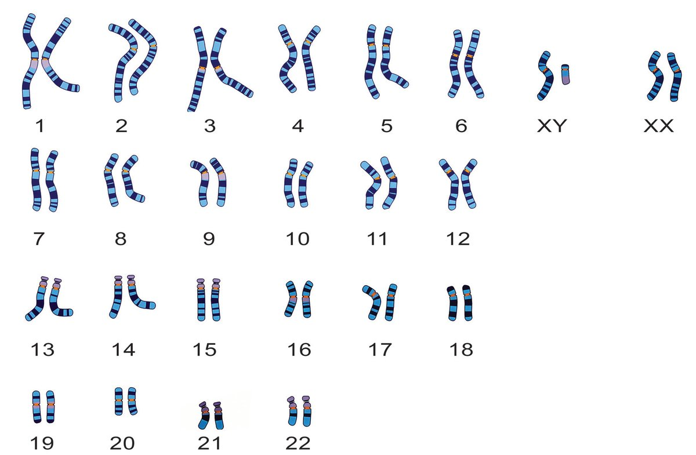
ജീവശാസ്ത്രം - X
ഓരോോ സ്പീഷീസിലും നിശ്ചിത എണ്ണം ക്രോോമസോോമുകളാണുള്ളത്. മനുഷ്യയരിൽ എത്ര ക്രോോമസോോമുകളാണുള്ളത്? അവ എപ്രകാരമാണ് കാണപ്പെടുന്നത് ? ചിത്രീകരണം 1.4 സൂചകങ്ങൾക്കനുസരിച്ച് വിശകലനം ചെയ്ത് മനുഷ്യയരിലെ ക്രോോമസോോമുകളെപ്പറ്റി ധാരണ കൈവരിച്ച് കുറിപ്പ് തയ്യാറാക്കൂ.
മനുഷ്യയരിലെ ക്രോോമസോോമുകൾ (Human Chromosomes)
സ്വവരൂപക്രോോമസോോമുകൾ
ലിംഗനിർണ്ണയ ക്രോോമസോോമുകൾ
ശാരീരികസവിശേഷതകളെ നിയന്ത്രിക്കുന്ന ക്രോോമസോോമുകളാണിവ. ഇരുപത്തിരണ്ട് ജോോടി സ്വവരൂപ ക്രോോമസോോമുകളാണുള്ളത്. ഒരുപോോ ലെയുള്ള രണ്ട് ക്രോോമസോോമുകൾ ചേർന്നതാണ് സമരൂപ ക്രോോമസോോമുകൾ (Homologous chromosomes). ഇവയിലൊൊന്ന് മാതാവിൽ നിന്നും മറ്റൊൊന്ന് പിതാവിൽ നിന്നും ലഭിച്ചതാണ്.
ലിംഗനിർണ്ണയത്തിനുകാരണമാകുന്ന ക്രോോമ സോോമുകൾ. ഇവ രണ്ടുതരമുണ്ട്. X ക്രോോമസോോമുംം Y ക്രോോമസോോമുംം. Y ക്രോോമസോംം X ക്രോോമസോോമുകളെ അപേക്ഷിച്ച് വളരെ ചെറുതാണ്. Y ക്രോോമസോോമിലെ SRY ജീനാണ് ഭ്രൂണത്തിൽ വൃഷണങ്ങളുടെ വികാസത്തിന് കാരണമാകുന്നത്.
(Somatic chromosomes)
(Sex Chromosomes)
OR 23
ുകൾ ക്രോോമസോോമു ി യി ജോോടികളാ ുന്നത് കാണപ്പെടു ്? എന്തുകൊൊണ്ട് കണ്ടെത്തൂ.
ചിത്രീകരണം 1.4
മനുഷ്യയരിലെ ക്രോോമസോോമുകൾ 13


ജീവശാസ്ത്രം - X
ം ഒരേ ക്രോോമസോം സംഖ്യയയുള്ള ം ഒന്നിലധികം ോ? ജീവികളുണ്ടോ കണ്ടെത്തൂ.
സൂചകങ്ങൾ y y y y
വിവിധതരം ക്രോോമസോോമുകൾ സ്വവരൂപക്രോോമസോോമുകൾ, ധർമ്മം സ്വവരൂപജോോഡി ലിംഗനിർണ്ണയ ക്രോോമസോോമുകൾ, ധർമ്മം നിങ്ങൾക്ക് ചുറ്റുംം കാണുന്ന ജീവികളുടെ ക്രോോമസോോമുകളുടെ എണ്ണം ഉൾപ്പെടുത്തി പട്ടിക തയ്യാറാക്കി ക്ലാസിൽ പ്രദർശിപ്പിക്കൂ.
സ്ത്രീയുടെയും പുരുഷന്റെയും ജനിതകഘടന നൽകിയിരിക്കുന്നത് ശ്രദ്ധിക്കൂ. അത് നിരീക്ഷിച്ച് പട്ടിക 1.1 പൂര്ത്തിയാക്കുക. പട്ടികയിലെ വിവരങ്ങൾ വിശകലനം ചെയ്ത് സ്ത്രീ, പുരുഷൻ എന്നിവരിലെ ക്രോോമസോംം സാമ്യയ-വ്യയത്യാസങ്ങളെപറ്റി നിഗമനം രൂപീകരിക്കൂ.
44 + XY
44 + XX
ആകെ ജനിതക ഘടന ക്രോോമസോോമുകളുടെ എണ്ണം
സ്വവരൂപ ക്രോോമസോോമുക ളുടെ എണ്ണം
ലിംഗനിര്ണ്ണയ ക്രോോമസോോമുകളുടെ എണ്ണവും തരവും
സ്ത്രീ പുരുഷൻ
പട്ടിക
1.1
മനുഷ്യയരിലെ ക്രോോമസോോമുകൾ 14


ജീവശാസ്ത്രം - X
വ്യയത്യയസ്തമായ ജനിതക ഘടനകൾ 44 + XX, 44 +XY എന്നിവ സാധാരണ ജനിതക ഘടനകളാണെങ്കിലും,
മനുഷ്യയരിൽ അനേകം വ്യയത്യയസ്തമായ ജനിതക ഘടനകൾ കാണപ്പെടുന്നു. ഈ വ്യയത്യയസ്ത ജനിതക ഘടനകൾ വ്യയക്തികളുടെ ശാരീരികവും മാനസികവുമായ വികാസത്തെ സ്വാധീനിക്കുന്നു. ലിംഗ നിർണ്ണയം ഒരു സങ്കീർണ്ണമായ പ്രക്രിയയാണ്, ഇത് ജനിതക ഘടനകളെ മാത്രമല്ല, മറ്റ് ഘടകങ്ങളെയും ആശ്രയിച്ചിരിക്കുന്നു. വ്യയത്യയസ്ത ജനിതകഘടനക്കുള്ള ചില ഉദാഹരണങ്ങൾ: y 44 + X0 : ഒരു X ക്രോോമസോംം മാത്രമുള്ള സ്ത്രീകൾ. ഇവർ ടണ്ണർ സിൻഡ്രോംം എന്ന അവസ്ഥയുള്ളവരാണ്. y 44 + XXX : മൂന്ന് X ക്രോോമസോോമുകളുള്ള സ്ത്രീകൾ. ഇവർ ട്രിപ്പിള്-എക്സ് സിൻഡ്രോംം എന്ന അവസ്ഥയുള്ളവരാണ്. y 44 +XXY : രണ്ട് X ക്രോോമസോോമുകളുംം ഒരു Y ക്രോോമസോോ മുംം ഉള്ള പുരുഷന്മാർ. ഇവർ ക്ലൈൻഫെൽട്ടർ സിൻഡ്രോംം എന്ന അവസ്ഥയുള്ളവരാണ്. y 44 + XYY : ഒരു X ക്രോോമസോോമുംം രണ്ട് Y ക്രോോമസോോമു കളുംം ഉള്ള പുരുഷന്മാർ. ഇവർ XYY സിൻഡ്രോംം എന്ന അവസ്ഥയുള്ളവരാണ്. മുകളിൽ സൂചിപ്പിച്ച ജനിതക ഘടനകളുള്ള വ്യയക്തികളിൽ ലിംഗ നിർണ്ണയം സങ്കീർണ്ണമായിരിക്കാം. ഉദാഹരണത്തിന്, ടണ്ണർ സിൻഡ്രോംം (Turner syndrome) ഉള്ള സ്ത്രീകൾക്ക് സ്ത്രീലൈംഗി കാവയവങ്ങൾ ഉണ്ടാകാം, എന്നാൽ അവരില് കൗൗമാരാരംഭത്തിൽ സ്ത്രീലൈംഗിക ലക്ഷണങ്ങൾ വികസിക്കില്ല. ക്ലൈൻഫെൽട്ടർ സിൻഡ്രോംം (Kline felter syndrome) ഉള്ള പുരുഷന്മാർക്ക് പുരുഷലൈംഗികാവയവങ്ങൾ ഉണ്ടാകും, എന്നാൽ അവർ സ്ത്രീലിംഗ ലക്ഷണങ്ങളുംം കാണിക്കാം. നമ്മുടെ ശരീരം എങ്ങനെ പ്രവർത്തിക്കണമെന്നതിനുള്ള നിർദേശങ്ങൾ നൽകുന്നത് ജീനുകളാണെന്ന് നിങ്ങൾ മനസ്സിലാക്കിയിട്ടുണ്ടല്ലോോ? ജീനുകൾ എവിടെയാണ് കാണപ്പെടുന്നത്? അവ എപ്രകാരമാണ് പ്രവർത്തിക്കുന്നത്? ചിത്രീകരണം 1.5, വിവരണം എന്നിവ വിശകലനം ചെയ്ത് കുറിപ്പ് തയ്യാറാക്കൂ.
ജീൻ (Gene)
DNAയിലെ നിശ്ചിത ന്യൂക്ലിയോോടൈഡുകളുടെ ശ്രേണിയാണ് ജീൻ.
ജീനുകളുടെ നിർദേശമനുസരിച്ച് നിർമ്മിക്കുന്ന പ്രോോട്ടീനുകളാണ് സ്വവഭാവ സവിശേഷതകൾ രൂപപ്പെടുത്തുന്നതും, മെറ്റാബോോളിക് പ്രവർത്തനങ്ങളെ നിയന്ത്രിക്കുന്നതും. 15
പിതാവിൽ നിന്നുള്ള Yണ് ാ ക്രോോമസോോമാ ഗ ലിം ിൽ ണ്ണയത്തി നിർ . ം പ്രധാനം ്? എന്തുകൊൊണ്ട് കണ്ടെത്തൂ.
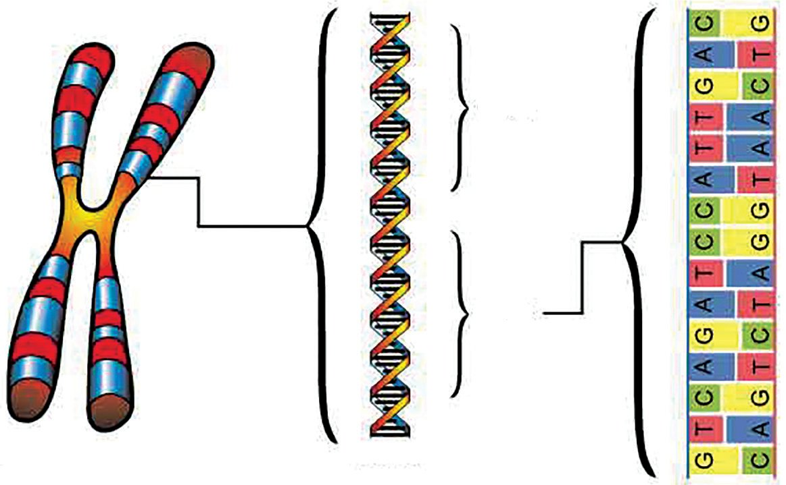
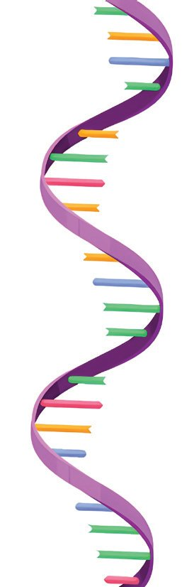
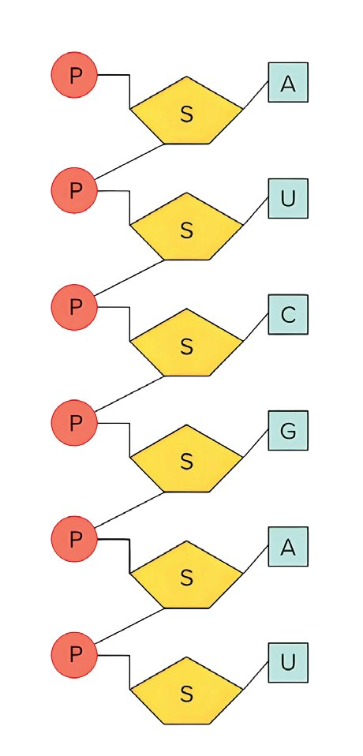
ജീവശാസ്ത്രം - X
ജീൻ 1
ജീൻ 2
DNA
ക്രോോമസോംം
ചിത്രീകരണം 1.5
ജീനുകൾ
പ്രോോട്ടീനുകളുടെ നിർമ്മാണത്തിൽ RNA എന്ന ന്യൂക്ലിക് ആസിഡിനും നിർണ്ണായക പങ്കുണ്ട്. RNA തന്മാത്രയുടെ ഘടന, സവിശേഷതകൾ എന്നിവ ചിത്രീകരണം 1.6, വിവരണം എന്നിവ
വിശകലനം ചെയ്ത് ധാരണ കൈവരിക്കൂ. RNA (Ribonucleic acid) DNAയെപ്പോോലെ മറ്റൊൊരു ന്യൂക്ലിക് ആസിഡാണ് RNA. ഇവയും ന്യൂക്ലിയോോടൈഡുകളാൽ നിർമ്മിത
ചിത്രീകരണം 1.6 RNAയുടെ ഘടന
മാണ്. ഓരോോ ന്യൂക്ലിയോോടൈഡിലും ഒരു റൈബോോസ് പഞ്ചസാര, ഒരു ഫോോസ്ഫേറ്റ് ഗ്രൂപ്പ്, ഒരു നൈട്രജൻ ബേസ് എന്നിവ അടങ്ങിയിരിക്കുന്നു. അഡിനിൻ, ഗ്വാനിൻ, യുറാസിൽ, സൈറ്റോോസിൻ എന്നിവയാണ് RNAയിലെ നൈട്രജൻ ബേസുകൾ. മിക്ക RNA ക്കും ഒരിഴയാണുള്ളത്.
RNA യുടെ ഘടന മനസ്സിലാക്കിയല്ലോോ. ഇതിനെ DNA യുടെ ഘടനയുമായി താരതമ്യംം ചെയ്ത് പട്ടിക 1.2 പൂര്ത്തിയാക്കൂ.
ഇഴകളുടെ എണ്ണം
പഞ്ചസാര നൈട്രജൻ ബേസുകൾ തന്മാത്രയുടെ തരം
DNA RNA
പട്ടിക
1.2 16
DNA, RNA താരതമ്യംം
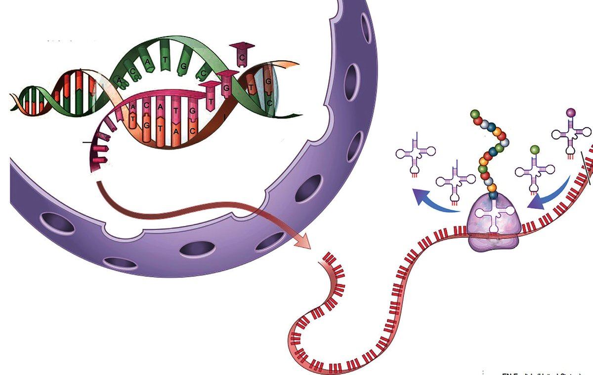
ജീവശാസ്ത്രം - X
പ്രോോട്ടീൻ നിർമ്മാണം (Protein Synthesis) ജീനുകളുടെ പ്രവർത്തനഫലമായാണ് പ്രോോട്ടീനുകളുണ്ടാകുന്നതെന്ന് മനസ്സിലാക്കിയല്ലോോ? പ്രോോട്ടീൻ നിർമ്മാണത്തിലെ വിവിധ ഘട്ടങ്ങളെ സംബന്ധിച്ച് ചിത്രീകരണം 1.7, വിവരണം എന്നിവ സൂചകങ്ങൾക്ക നുസരിച്ച് വിശകലനം ചെയ്ത് കുറിപ്പ് തയ്യാറാക്കൂ. 1. ട്രാന്സ്ക്രിപ്ഷന്
പ്രോോട്ടീൻ tRNA
അമിനോോ ആസിഡ്
mRNA DNA
റൈബോോസോംം
ന്യൂക്ലിയസ്
2. ട്രാൻസ്ലേഷൻ
ചിത്രീകരണം 1.7
പ്രോോട്ടീൻ നിർമ്മാണം
1. ട്രാൻസ്ക്രിപ്ഷൻ (Transcription)
DNAയിലെ ഒരു നിർദിഷ്ട ന്യൂക്ലിയോോടൈഡ് ശ്രേണിയിൽ (ജീൻ) നിന്ന് വിവിധ എൻസൈമുകളുടെ സഹായത്താൽ mRNA (messenger RNA) രൂപപ്പെടുന്നു. mRNA യിൽ പ്രോോട്ടീൻ നിർമ്മാണ ത്തിനുളള സന്ദേശം അടങ്ങിയിരിക്കുന്നു. 2. ട്രാൻസ്ലേഷൻ (Translation)
ന്യൂക്ലിയസ്സിൽ നിന്നും റൈബൊൊസോോമിലെത്തിയ mRNA യിലെ സന്ദേശമനുസരിച്ച് tRNAകൾ (transfer RNA) നിശ്ചിത അമിനോോ ആസിഡുകളെ റൈബോോസോോമിലെത്തിക്കുന്നു. റൈബോോസോോമിന്റെ ഭാഗമായ rRNA (ribosomal RNA) കളുടെ പ്രവർത്തനത്താൽ അമിനോോ ആസിഡുകളെ കൂട്ടിച്ചേർത്ത് പ്രോോട്ടീനുകളെ നിർമ്മിക്കുന്നു.
17
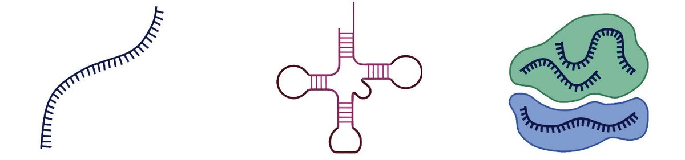

ജീവശാസ്ത്രം - X
സൂചകങ്ങൾ y പ്രോോട്ടീൻ നിർമ്മാണത്തിന്റെ ഘട്ടങ്ങള് y ന്യൂക്ലിയസ്സിൽ നടക്കുന്ന പ്രവർത്തനങ്ങൾ. y കോോശദ്രവ്യയത്തിൽ നടക്കുന്ന പ്രവർത്തനങ്ങൾ. പ്രോോട്ടീൻ നിർമ്മാണത്തിലെ വിവിധ പ്രവർത്തനങ്ങൾ ഉൾപ്പെടുത്തി ഫ്ളോോചാർട്ട് തയ്യാറാക്കി ക്ലാസ്സിൽ പ്രദർശിപ്പിക്കൂ. പ്രോോട്ടീൻ നിർമ്മാണത്തിലുൾപ്പെടുന്ന വിവിധ RNA കൾ ചിത്രീകരണം 1.8 ൽ നൽകിയിരിക്കുന്നു. അവയുടെ പേര്, ധർമ്മം എന്നിവ ഉൾപ്പെ ടുത്തി ചിത്രീകരണം പൂർത്തിയാക്കൂ. rRNA (Ribosomal RNA)
റൈബോോസോോ മുകളുടെ പ്രധാന ഘടകം, അമിനോോ ആസിഡുകൾ തമ്മിലുള്ള ബോോണ്ട് രൂപീകരണത്തിന് സഹായിക്കുന്നു.
ചിത്രീകരണം 1.8
വിവിധതരം RNA കൾ
ജീനുകളുടെ നിർദേശം അനുസരിച്ച് നിർമ്മിക്കപ്പെടുന്ന പ്രോോട്ടീനുകൾ ജീവികളുടെ സ്വവഭാവ സവിശേഷതകളെ എപ്രകാരം സ്വാധീനിക്കുന്നുവെന്ന് മനസ്സിലാക്കുന്നതിന് നൽകിയിരിക്കുന്ന ചിത്രം നിരീക്ഷിച്ച് മാതൃജീവികളുംം സന്താനങ്ങളുംം തമ്മിലുള്ള സാമ്യയവ്യയത്യാസങ്ങൾ കണ്ടെത്തൂ.
18

ജീവശാസ്ത്രം - X
സ്വവഭാവങ്ങളിലെ സാമ്യയ-വ്യയത്യാസങ്ങള് മാതാപിതാക്കളുടെ ചില സവിശേഷതകൾ സന്താനങ്ങളിൽ കാണുന്നില്ലേ. ഇതിൽനിന്നും വ്യയത്യയസ്തമായ ചില സവിശേഷതകളുംം സന്താനങ്ങളിൽ കാണപ്പെടുന്നില്ലേ? മാതാപിതാക്കളുടെ സവിശേഷതകൾ സന്താനങ്ങളിലേക്ക് വ്യാപരി ക്കുന്നതാണ് പാരമ്പര്യംം (Heredity). മാതാപിതാക്കളിൽ നിന്ന് വ്യയത്യയസ്തമായി സന്താനങ്ങളിൽ പ്രകടമാകുന്ന സവിശേഷതകളാണ് വ്യയതിയാനങ്ങൾ (Variations). മാതാപിതാക്കളിൽ നിന്ന് സന്താനങ്ങൾക്ക് ലഭിക്കുന്ന ജീനുകളാണ് പാരമ്പര്യംം, വ്യയതിയാനം എന്നിവയ്ക്ക് കാരണമാകുന്നത്. ജീനുകളുടെ കണ്ടെത്തലിലേക്ക് ശാസ്ത്രത്തെ നയിച്ച ചരിത്രവഴികൾ വളരെ പ്രധാനപ്പെട്ടതാണ്. നൽകിയിരിക്കുന്ന വിവരണം വിശകലനം ചെയ്ത് കൂടുതൽ ധാരണ കൈവരിക്കൂ. 19


ജീവശാസ്ത്രം - X
Mendel Museum of Masaryk University in Brno
പൂന്തോോട്ടത്തിലെ ജനിതകശാസ്ത്രം
ഗ്രിഗർ ജൊൊഹാൻ മെൻഡൽ 1822 -1884
ജീനുകൾ, പാരമ്പര്യംം, വ്യയതിയാനം എന്നിവയെക്കുറിച്ച് പ്രതിപാദി ക്കുന്ന ശാസ്ത്രശാഖയാണ് ജനിതകശാസ്ത്രം (Genetics). ഗ്രിഗർ ജോോഹാൻ മെൻഡൽ (Gregor Johann Mendel) തോോട്ടപ്പയര് ചെടിയില് (Pisum sativum) നടത്തിയ വർഗസങ്കരണ പരീക്ഷണങ്ങ ളിലൂടെ എത്തിച്ചേർന്ന നിഗമനങ്ങളാണ് ജനിതകശാസ്ത്രം എന്ന ശാ ഖയ്ക്ക് അടിത്തറപാകിയത്. അതിനാൽ അദ്ദേഹത്തെ ജനിതകശാസ്ത്ര ത്തിൻ്റെ പിതാവായി കണക്കാക്കുന്നു.
ശാസ്ത്രജ്ഞരെ അറിയാം ഗ്രിഗർ ജൊൊഹാൻ മെൻഡൽ
ഗ്രിഗർ ജോോഹാൻ മെൻഡൽ 1822 ജൂലൈ 20-ന് ഇപ്പോോൾ ചെക്ക് റിപ്പബ്ലിക് എന്നറിയപ്പെടുന്ന വടക്കൻ മൊൊറാവിയ യിലെ ഒരു ചെറിയ ഗ്രാമമായ ഹൈൻസിസിലാണ് ജനിച്ച ത്. ബ്രൂണിലെ അഗസ്തീനിയൻ ആശ്രമത്തിൽ ചേർന്നശേ ഷം അദ്ദേഹം 1847-ൽ ഒരു പുരോോഹിതനായി. 1851 നും 1853 നും ഇടയിൽ വിയന്ന സർവകലാശാലയിൽ ചേർന്ന് ഭൗതികശാസ്ത്രം, ഗണിതം, പ്രകൃതിശാസ്ത്രം എന്നിവയിൽ പഠ നങ്ങൾ നടത്തുകയും ശാസ്ത്രീയമായി ഡാറ്റ വിശകലനം ചെ യ്യുന്നതിനുള്ള സ്റ്റാറ്റിസ്റ്റിക്കൽ രീതികൾ മനസ്സിലാക്കുകയും ചെയ്തു. 20

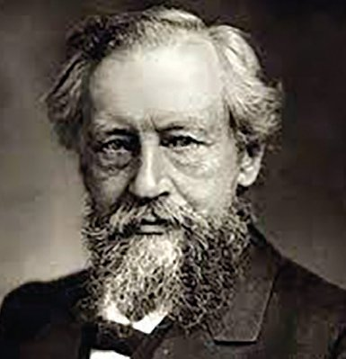

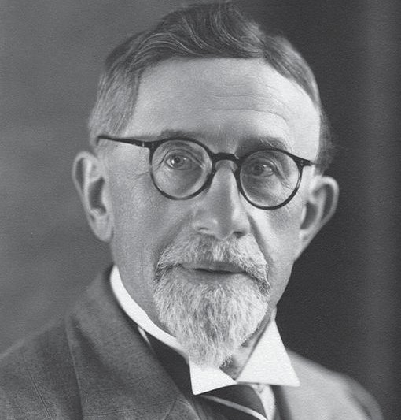
ജീവശാസ്ത്രം - X
1856-ൽ, മെൻഡൽ തന്റെ ആശ്രമത്തിലെ പൂന്തോോട്ടത്തിൽ തോോട്ടപ്പയർ ചെടികളിൽ (Pisum sativum) പൂക്കളുടെ നിറം, വിത്തിൻ്റെ ആകൃതി തുടങ്ങി ഏഴു പ്രത്യേേക സ്വവഭാ വങ്ങളെ അധികരിച്ച് വർഗസങ്കരണ പരീക്ഷണങ്ങൾ ആരം ഭിച്ചു. പരീക്ഷണ ഫലങ്ങളുടെ വിശകലനത്തിലൂടെ ഒരു സ്വവഭാവത്തെ നിയന്ത്രിക്കാൻ ഒരു ജോോടി ഘടകങ്ങളുണ്ടെ ന്ന് വിശദീകരിക്കുകയും അവയെ പ്രതീകങ്ങൾ ഉപയോോഗി ച്ച് ചിത്രീകരിക്കുകയും ചെയ്തു. ജീനുകൾ എന്ന് ഇപ്പോോൾ അറിയപ്പെടുന്നത് ഈ ഘടകങ്ങളാണ്. ഗ്രിഗർ മെൻഡലി ന്റെ നിഗമനങ്ങൾ പാരമ്പര്യയപ്രേഷണ നിയമങ്ങൾ (Laws of inheritance) എന്നറിയപ്പെടുന്നു. പാരമ്പര്യയത്തെയും വ്യയതി യാനത്തെയും മനസ്സിലാക്കുന്നതിനുള്ള പ്രാഥമിക ജനിത കരൂപരേഖയാണ് ഈ നിയമങ്ങൾ നൽകുന്നത്. 1865-ൽ
തന്റെ കണ്ടെത്തലുകൾ ബ്രൂണിലെ നാച്ചുറൽ ഹിസ്റ്ററി സൊൊസൈറ്റിയിൽ അവതരിപ്പിച്ചു. അടുത്ത വർഷം, സസ്യയസങ്കരണങ്ങളെക്കുറിച്ചുള്ള പരീക്ഷണങ്ങൾ എന്ന പേരിൽ പ്രബന്ധവും പ്രസിദ്ധീകരിച്ചു. എന്നാൽ അക്കാലത്തെ ശാസ്ത്രസമൂഹം മെൻഡലിന്റെ കണ്ടെത്തലു കളെ അവഗണിച്ചു. 1884 ൽ ഗ്രിഗർ മെൻഡൽ അന്തരിച്ചു. അദ്ദേഹത്തിൻ്റെ മരണത്തിന് 16 വർഷങ്ങൾക്ക് ശേഷം, സസ്യയശാസ്ത്രജ്ഞരായ ഹ്യൂഗോോ ഡി വ്രീസ്, കാൾ കോോറൻസ്, എറിക് വോോൺ ഷെർമാക് എന്നിവർ മെൻഡ ലിൻ്റെ ഗവേഷണങ്ങളുടെ പ്രാധാന്യം തിരിച്ചറിഞ്ഞു. ഇതോോ ടെയാണ് ജനിതകശാസ്ത്രം എന്ന ശാസ്ത്രശാഖയുടെ നിർ ണ്ണായക അടിത്തറയായി മെൻഡലിന്റെ കണ്ടെത്തലുകൾ അംഗീകരിക്കപ്പെട്ടത്. വിവിധ ശാസ്ത്രകാരരുടെ അനവധി സംഭാവനകളിലൂടെ ഏറ്റവും വിപുലമായ ശാസ്ത്രശാഖയാ യി ജനിതകശാസ്ത്രം വളർന്നിരിക്കുന്നു.
ഹ്യൂഗോോ ഡി വ്രീസ്
1900-ൽ,
കാൾ കോോറൻസ്
എറിക് വോോൺ ഷെർമാക് 21

ജീവശാസ്ത്രം - X
മെൻഡലിൻ്റെ പരീക്ഷണങ്ങൾ (Mendel's Experiments)
മെൻഡൽ ആദ്യംം ഒരു ജോോടി വിപരീതഗുണങ്ങളെ പരിഗണിച്ചാണ് വർഗസങ്കരണ പരീക്ഷണം നടത്തിയത്. ഇത് മോോണോോഹൈബ്രിഡ് ക്രോോസ് (Monohybrid Cross) എന്നറിയപ്പെടുന്നു. ഉയരം എന്ന സ്വവഭാവത്തെ പരിഗണിച്ച് നടത്തിയ വർഗസങ്കരണ പരീക്ഷണം ചിത്രീകരണം 1.9 ൽ നൽകിയിരിക്കുന്നു. ഇത് സൂചകങ്ങൾക്കനുസരിച്ച് വിശകലനം ചെയ്ത് നിഗമനം രൂപീകരിക്കൂ. മാതൃസസ്യയങ്ങൾ
X ഉയരം കൂടിയത്
ഉയരം കുറഞ്ഞത്
ഒന്നാം തലമുറ (F1)
ഉയരം കൂടിയത്
ഗുണങ്ങളെ നിയന്ത്രിക്കുന്ന ഘടകങ്ങൾ വിത്തിനുള്ളിൽ ഉണ്ടാകാം എന്ന് അദ്ദേഹം ഊഹിച്ചു. ഉയരക്കുറവ് എന്ന ഗുണത്തിനു കാരണമായ ഘടകത്തിന് എന്തായിരിക്കും സംഭവിച്ചിട്ടുണ്ടാവുക എന്ന് കണ്ടെത്താൻ അദ്ദേഹം ഒന്നാം തലമുറയിൽ ലഭിച്ച ചെടികളെ സ്വവപരാഗണത്തിനു വിധേയമാക്കി രണ്ടാം തലമുറ സസ്യയങ്ങളെ ഉൽപാദിപ്പിച്ചു.
രണ്ടാം തലമുറ (F2) 1064
ചെടികൾ
277 ഉയരം കുറഞ്ഞത്
787 ഉയരം കൂടിയത്
ഗുണങ്ങൾ തമ്മിലുള്ള അനുപാതം ഏകദേശം 3 : 1 ചിത്രീകരണം 1.9 മോോണോോഹൈബ്രിഡ് ക്രോോസ് 22

ജീവശാസ്ത്രം - X
സൂചകങ്ങൾ y പരിഗണിച്ച സ്വവഭാവവും അവയുടെ ഗുണങ്ങളുംം y ഒന്നാം തലമുറയില് പ്രകടമായതും മറഞ്ഞിരിക്കുന്നതുമായ ഗുണങ്ങള് y സ്വവപരാഗണത്തിന്റെ പ്രാധാന്യം y രണ്ടാം തലമുറയിലെ ഗുണങ്ങള് പയർ ചെടിയിലെ മറ്റ് ആറു വ്യയത്യയസ്ത സ്വവഭാവങ്ങളുടെ വിപരീ തഗുണങ്ങൾ അടിസ്ഥാനമാക്കി വർഗസങ്കരണ പരീക്ഷണം നടത്തിയപ്പോോഴുംം ആദ്യയപരീക്ഷണത്തിന് സമാനമായ ഫലമാണ് മെന്ഡലിന് ലഭിച്ചത്.
ഘടകങ്ങള് (Factors) മാതാപിതാക്കളിൽ നിന്ന് സ്വവഭാവ സവിശേഷതകൾ സന്താനങ്ങൾക്ക് ലഭിക്കുന്നത് ലിംഗകോോശങ്ങളിലൂടെ കൈമാറ്റം ചെയ്യപ്പെടുന്ന ചില ഘടകങ്ങളിലൂടെയാണ് എന്ന് ഗ്രിഗർ മെൻഡൽ അനുമാനിച്ചു. ഈ ഘടകങ്ങൾ ന്യൂക്ലിയസിലെ ക്രോോമസോോമുകളിൽ കാണപ്പെടുന്ന ജീനുകളാണെന്ന് കണ്ടെത്തിയത് മെന്ഡലിന്റെ കാല ഘട്ടത്തിന് ശേഷമാണ്. ഒരു സ്വവഭാവത്തെ നിർണ്ണയിക്കു ന്ന ജീനിന് വ്യയത്യയസ്ത തരങ്ങളുണ്ടാകും. ഒരു ജീനിന്റെ വ്യയത്യയസ്ത തരങ്ങളെ അലീലുകൾ (Alleles) എന്നു വിളി ക്കുന്നു. സാധാരണയായി ഒരു ജീനിന് രണ്ട് അലീലുക ളാണുള്ളത്. ചിത്രീകരണം 1.9 ലെ വർഗസങ്കരണത്തിൽ ഉയരം എന്ന സ്വവഭാവത്തെ നിർണ്ണയിക്കുന്ന ജീനിന്റെ വ്യയ ത്യയസ്ത അലീലുകളാണ് T, t എന്നിവ. T എന്ന അലീൽ ഉയരക്കൂടുതലിനെയും t എന്ന അലീൽ ഉയരക്കുറവി നെയും സൂചിപ്പിക്കുന്നു. ഒരു ജീവിയിലെ സ്വവഭാവത്തി ന്റെ പ്രകടരൂപത്തെ ഫീനോോടൈപ്പെന്നും (Phenotype) ഇതിനുകാരണമായ ജനിതകഘടനയെ ജീനോോടൈപ്പ് (Genotype) എന്നും പറയുന്നു. സ്വവഭാവങ്ങളെ നിയന്ത്രിക്കുന്ന ഘടകങ്ങളെ പ്രതീകങ്ങൾ ഉപയോോഗിച്ച് സൂചിപ്പിച്ചുകൊൊണ്ട് വർഗസങ്കരണ പരീക്ഷണം (Hybridisation experiment) ചിത്രീകരിച്ചിരിക്കുന്നത് നിരീക്ഷിക്കൂ (ചിത്രീകരണം 1.10). ഇത് പൂർത്തീകരിച്ച് സൂചകങ്ങളുടെ അടിസ്ഥാനത്തിൽ ചർച്ചചെയ്ത് കുറിപ്പ് തയ്യാറാക്കൂ. 23
ം എല്ലായ്പോോഴും ം പ്രകടഗുണം മാത്രമാണോോ ് ഫീനോോടൈപ്പ് ആകുക? കണ്ടെത്തൂ.
ജീവശാസ്ത്രം - X
മാതൃസസ്യയങ്ങൾ ഉയരം കൂടിയത്
X
ഉയരം കുറഞ്ഞത്
T
ബീജകോോശങ്ങൾ
t
TT
tt
Tt
F1
(ഉയരം കൂടിയത്)
ഒന്നാം തലമുറയുടെ സ്വവപരാഗണം (Self pollination)
Tt T
F2 ................
ഉയരം കൂടിയത്
Tt
X ബീജകോോശങ്ങൾ
t
Tt .......
......
......
................ ................
tt .......
ചിത്രീകരണം 1.10 മോോണോോഹൈബ്രിഡ് ക്രോോസ്
സൂചകങ്ങൾ y മാതൃസസ്യയങ്ങളുടെ ഫീനോോടൈപ്പും ജീനോോടൈപ്പും y ഒന്നാം തലമുറ സസ്യയത്തിന്റെ ഫീനോോടൈപ്പും ജീനോോടൈപ്പും y ഉയരം കൂടിയ മാതൃസസ്യയത്തിന്റെയും സസ്യയത്തിന്റെയും ജീനോോടൈപ്പുകൾ
ഒന്നാം
y രണ്ടാം തലമുറയിലെ സ്വവഭാവങ്ങളുടെ അനുപാതം 24
തലമുറ
ജീവശാസ്ത്രം - X
മോോണോോഹൈബ്രിഡ് ക്രോോസിൽ നിന്നും ഗ്രിഗർ മെൻഡൽ രൂപീകരിച്ച അനുമാനങ്ങൾ ചുവടെ നൽകിയിരിക്കുന്നു. അവ വിശകലനം ചെയ്ത് താഴെ നൽകിയിരിക്കുന്ന ചോോദ്യയങ്ങൾക്ക് ഉത്തരം കണ്ടെത്തൂ.
മെന്ഡലിന്റെ അനുമാനങ്ങള് y ഒരു സ്വവഭാവത്തെ നിയന്ത്രിക്കുന്നത് രണ്ട് ഘടകങ്ങൾ ചേർന്നാണ്. y ഒരു ജോോടി വിപരീതഗുണങ്ങളെ വർഗസങ്കരണത്തിന് വിധേയമാക്കുമ്പോോൾ ഒന്നാം തലമുറയിലെ സന്താനങ്ങ ളിൽ വിപരീതഗുണങ്ങളിൽ ഒന്നുമാത്രം പ്രകടമാവുകയും മറ്റേത് മറഞ്ഞിരിക്കുകയും ചെയ്യും. ഒന്നാം തലമുറയിൽ പ്രത്യയക്ഷപ്പെട്ട ഗുണത്തെ പ്രകടഗുണം (Dominant trait) എന്നും മറഞ്ഞിരുന്നതിനെ ഗുപ്തഗുണം (Recessive trait) എന്നും പറയുന്നു. ഒന്നാം തലമുറയിൽ മറഞ്ഞിരിക്കുന്ന ഗുണങ്ങൾ രണ്ടാം തലമുറയിൽ പ്രകടമാകുന്നുണ്ട്. y ലിംഗകോോശങ്ങൾ (Gametes) ഉണ്ടാകുമ്പോോൾ സ്വവഭാവത്തെ നിർണ്ണയിക്കുന്ന ഘടകങ്ങൾ കൂടിക്കലരാതെ വേർപിരിയു ന്നു. y രണ്ടാം തലമുറയിലെ സന്താനങ്ങളിൽ പ്രകടഗുണമുള്ളവ യുടെയും ഗുപ്തഗുണമുള്ളവയുടെയും അനുപാതം 3 : 1 ആണ്.
?
ഉയരക്കൂടുതലും ഉയരക്കുറവും ചേർന്ന് ഇടത്തരം ഉയരമുള്ള സസ്യയമുണ്ടായില്ല എന്തുകൊൊണ്ട്?
?
ഒന്നാം തലമുറയില് പ്രകടമാകാത്ത ഗുണം രണ്ടാം തലമുറയിൽ പ്രത്യയക്ഷപ്പെട്ടല്ലോോ? അതെങ്ങനെയായിരിക്കും?
അടുത്ത ഘട്ടത്തിൽ ഒരേ ചെടിയിലെ രണ്ടു ജോോടി വിപരീത ഗുണ ങ്ങളുടെ പ്രേഷണം അദ്ദേഹം നിരീക്ഷണ വിധേയമാക്കി. ഇത് ഡൈഹൈബ്രിഡ് ക്രോോസ് (Dihybrid Cross) എന്നറിയപ്പെടുന്നു. സസ്യയത്തിന്റെ ഉയരവും വിത്തിന്റെ ആകൃതിയും പരിഗണിച്ചുകൊൊണ്ട് നടത്തിയ വർഗസങ്കരണ പരീക്ഷണം ചിത്രീകരണം 1.11 സൂചകങ്ങ ളുടെ അടിസ്ഥാനത്തിൽ വിശകലനം ചെയ്ത് നിഗമനങ്ങൾ എഴുതൂ. 25

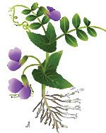
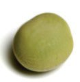
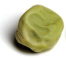
ജീവശാസ്ത്രം - X
മാതൃസസ്യയങ്ങൾ
X
TTRR
ഉയരം കൂടിയത്, ഉരുണ്ട വിത്ത്
ttrr
TR
ഉയരം കുറഞ്ഞത്, ചുളുങ്ങിയ വിത്ത്
tr ബീജകോോശങ്ങൾ
TtRr .................................................. TtRr X TtRr
F1 ഒന്നാം തലമുറയുടെ സ്വവപരാഗണം ബീജകോോശങ്ങൾ
TR F2 Tr tR tr
TR
Tr
tR
tr
TTRR
ഉയരം കൂടിയത്, ഉരുണ്ട വിത്ത്
ചിത്രീകരണം 1.11 ഡൈഹൈബ്രിഡ് ക്രോോസ്
സൂചകങ്ങൾ y y y y y y
പരിഗണിച്ച സ്വവഭാവങ്ങളുംം അവയുടെ വിപരീത ഗുണങ്ങളുംം മാതൃസസ്യയങ്ങളുടെ ഫീനോോടൈപ്പും ജീനോോടൈപ്പും ഒന്നാം തലമുറയിലെ പ്രകടഗുണവും ഗുപ്തഗുണവും ഒന്നാം തലമുറ ഉൽപാദിപ്പിക്കുന്ന ബീജകോോശങ്ങളിലെ അലീലുകൾ രണ്ടാം തലമുറയിലെ സസ്യയങ്ങളിലെ ഫീനോോടൈപ്പുകൾ മാതൃസസ്യയങ്ങളിൽ നിന്ന് വ്യയത്യയസ്തമായി രണ്ടാം തലമുറയിൽ കാണപ്പെട്ട ഫീനോോടൈപ്പുകളുംം അവയുടെ ജീനോോടൈപ്പുകളുംം. y രണ്ടാം തലമുറയിലെ ഫീനോോട്ടിപ്പിക് അനുപാതം 26
ജീവശാസ്ത്രം - X
ഈ പരീക്ഷണത്തിലൂടെ മെൻഡൽ എത്തിച്ചേർന്ന അനുമാനം ചുവടെ ചേർക്കുന്നു. അത് വിശകലനം ചെയ്ത് നൽകിയിരിക്കുന്ന ചോോദ്യയത്തിന് ഉത്തരം കണ്ടെത്തി എഴുതൂ.
മെന്ഡലിന്റെ അനുമാനം രണ്ടോോ അതിലധികമോോ വ്യയത്യയസ്ത സ്വവഭാവങ്ങള് കൂടിച്ചേരുമ്പോോള് അവയില് ഓരോോ സ്വവഭാവവും പരസ്പരം കൂടിക്കലരാതെ സ്വവത ന്ത്രമായി അടുത്ത തലമുറയിലേക്ക് വ്യാപരിക്കുന്നു (ഒരു ജീവിയുടെ ഒരു ജോോടി അലീലുകൾ മറ്റൊൊരു ജോോടി അലീലുകളുടെ വേർപെട ലിനെ സ്വാധീനിക്കുന്നില്ല).
?
മാതൃസസ്യയങ്ങളിൽ കാണപ്പെടാത്ത സ്വവഭാവങ്ങൾ രണ്ടാം തലമുറയിൽ കാണപ്പെടുന്നു. എന്തുകൊൊണ്ട്?
സ്വവഭാവങ്ങൾക്ക് പലപ്പോോഴുംം രണ്ടിൽ കൂടുതല് ഗുണങ്ങള് കാണാറുണ്ടല്ലോോ? എന്താകും കാരണം?
പൂക്കൾ നിരീക്ഷിച്ച കുട്ടിയുടെ സംശയം ശ്രദ്ധിച്ചില്ലേ? എന്താണ് നിങ്ങളുടെ അഭിപ്രായം? മെൻഡലിന്റെ നിയമങ്ങൾ ജനിതകശാസ്ത്രത്തിന്റെ അടിത്തറയായി രുന്നു. എന്നാൽ ജീവികളിലെ സ്വവഭാവഗുണങ്ങളുടെ വൈവിധ്യയത്തെ പൂർണ്ണമായി വിശദീകരിക്കാൻ അതിന് കഴിഞ്ഞില്ല. ജീനുകൾ, പരി സ്ഥിതി, മറ്റ് ഘടകങ്ങൾ എന്നിവ തമ്മിലുള്ള സങ്കീർണ്ണമായ ഇടപെ ടലുകളെക്കുറിച്ചുള്ള പിൽക്കാല പഠനങ്ങൾ മെൻഡലിന്റെ നിയമങ്ങ ളുടെ ചില പരിമിതികൾ വെളിവാക്കി. ഇത് നോോൺമെൻഡേലിയൻ ഇൻഹെറിറ്റൻസ് (Non-Mendelian Inheritance) എന്ന ആശയത്തിന് തുടക്കമിട്ടു. 27

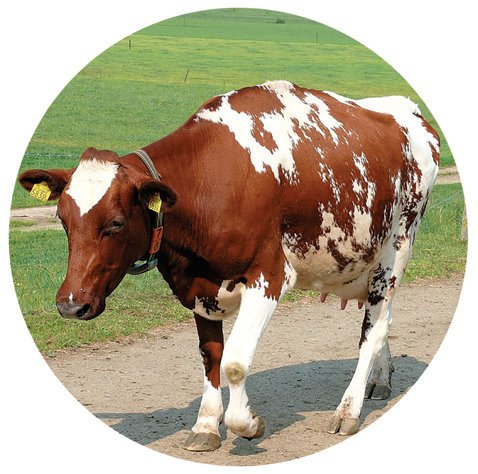

ജീവശാസ്ത്രം - X
ചുവടെ നല്കിയിരിക്കുന്ന വിവിധ സാഹചര്യയങ്ങള് വിശകലനം ചെയ്ത് മെൻഡലിന്റെ അനുമാനങ്ങളിൽ നിന്ന് ഇവ എപ്രകാരം വ്യയ ത്യാസപ്പെട്ടിരിക്കുന്നു എന്ന് കണ്ടെത്തി കുട്ടിയുടെ സംശയത്തിന് ഉത്തരം കണ്ടെത്തൂ.
നോോൺമെൻഡേലിയൻ ഇൻഹെറിറ്റൻസ് (Non Mendelian Inheritance)
ചുവന്ന പൂവുള്ള നാലുമണിച്ചെടിയെ വെള്ളപ്പൂവുളള നാലുമണിച്ചെ ടിയുമായി വർഗസങ്കരണം നടത്തിയാൽ പിങ്ക് പൂക്കളുള്ള ചെടികൾ ഉണ്ടാകുന്നു. പ്രകടഗുണത്തിന്റെ അലീലിന് ഗുപ്തഗുണത്തിന്റെ അലീലിനെ പൂർണ്ണമായും മറയ്ക്കാൻ സാധിക്കുന്നില്ല. ഇൻകംപ്ലീറ്റ് ഡൊൊമിനൻസ് (Incomplete dominance) ചില കന്നുകാലികളിലും കുതിരകളിലും കാണുന്ന റോോൺ കോോട്ട് രണ്ട് അലീലുകളുടെയും ലക്ഷണങ്ങൾ ഒരേ സമയം പ്രകടമാക്കുന്നു. കോോഡൊൊമിനൻസ് (Co-dominance) മനുഷ്യയനിലെ ABO രക്തഗ്രൂപ്പ് രക്തഗ്രൂപ്പ് നിർണ്ണയിക്കുന്ന ജീനിന് മനുഷ്യയഗണത്തിൽ (Human population) രണ്ടിൽക്കൂടുതൽ അലീലുകളുണ്ട്. IA, IB, i എന്നീ മൂന്ന് അലീലുകൾ രക്തഗ്രൂപ്പ് നിർണ്ണയിക്കുന്നു. മൾട്ടിപ്പിൾ അലീലിസം (Multiple allelism)
ത്വവക്കിന്റെ നിറവ്യയത്യാസം ത്വവക്കിന്റെ നിറത്തെ നിയന്ത്രിക്കുന്നത് ഒന്നിലധികം ജീനുകൾ ചേർന്നാണ്. ഇവയുടെ പ്രവർത്തനഫലമായി മെലാനിന്റെ ഉൽപാദനത്തിൽ ഉണ്ടാകുന്ന ഏറ്റക്കുറച്ചിൽ നിറവ്യയത്യാസത്തിന് കാരണമാകുന്നു. പോോളിജീനിക് ഇന്ഹെറിറ്റന്സ് (Polygenic inheritance) സവിശേഷത
പട്ടിക
1.3
കാരണം
പ്രതിഭാസത്തിന്റെ പേര്
നോോൺ മെൻഡേലിയൻ ഇൻഹെറിറ്റൻസ് 28


ജീവശാസ്ത്രം - X
നോോൺമെൻഡേലിയൻ ഇൻഹെറിറ്റൻസിൽ ഉൾപ്പെടുന്ന കൂടുതൽ സാഹചര്യയങ്ങളുംം ഉദാഹരണങ്ങളുംം കണ്ടെത്തി ക്ലാസിൽ പ്രസന്റേഷൻ അവതരിപ്പിക്കൂ.
നിറവ്യയത്യാസത്തിന് പിന്നിൽ ത്വവക്കിന് നിറം നൽകുന്ന പ്രധാന വർണ്ണകമാണ് മെലാനിൻ. മെലാനിന്റെ അളവും തരവും ചേർന്ന് ത്വവക്കിന്റെ നിറം നിർണ്ണയിക്കുന്നു. ഒരു വ്യയക്തിയുടെ പൂർവികർ ഏത് ഭൂമിശാസ്ത്രപരമായ പ്രദേശത്തുനിന്നാണ് വന്നത് എന്നത് ത്വവക്കിന്റെ നിറത്തെ സ്വാധീനിക്കുന്ന ഒരു പ്രധാന ഘടകമാണ്. ഭൂമിശാസ്ത്രപരമായ വ്യയത്യയസ്ത പ്രദേശങ്ങ ളിലെ സൂര്യയപ്രകാശത്തിന്റെ തീവ്രത വ്യയത്യയസ്തമായതിനാൽ, ഓരോോ പ്രദേശത്തും ത്വവക്കിന്റെ നിറത്തിന് അനുയോോജ്യയമായ ജനിതകമാറ്റങ്ങൾ സംഭവിച്ചു. സൂര്യയപ്രകാ ശം, ഭക്ഷണം, വിറ്റാമിൻ ഡി എന്നിവ പോോലുള്ള പരിസ്ഥിതി ഘടകങ്ങളുംം ത്വവക്കി ന്റെ നിറത്തെ സ്വാധിനിക്കുന്നു. മനുഷ്യയരാശി ജനിതകപരമായി വളരെ വൈവിധ്യയ മാർന്നതാണ്, ത്വവക്കിന്റെ നിറം അതിന്റെ ഒരു ഭാഗം മാത്രമാണ്.
ിൽ മാതാപിതാക്കളി ങ്ങൾ ഇല്ലാത്ത സ്വവഭാവ സന്താനങ്ങളിൽ ുണ്ടാകുന്നത്? എങ്ങനെയാണു
കുട്ടിയുടെ സംശയം ശ്രദ്ധിച്ചല്ലോോ. മാതാപിതാക്കളിൽ നിന്ന് സന്താനങ്ങൾക്ക് ലഭിക്കുന്ന സവിശേഷ തകൾ എല്ലായ്പ്പോോഴുംം ഒന്നുതന്നെയായിരിക്കണമെന്നില്ല. വ്യയക്തികൾ തമ്മിലുള്ള ഈ വൈവിധ്യയത്തിന് കാരണമാകുന്ന പ്രധാന ജനിതക പ്രക്രിയകൾ ചുവടെ നൽകിയിരിക്കുന്നു. അവ വിശകലനം ചെയ്ത് കുട്ടിയുടെ സംശയത്തിന് ഉത്തരം കണ്ടെത്തൂ. 29

ജീവശാസ്ത്രം - X
വ്യയതിയാനങ്ങൾക്ക് കാരണമായ ജനിതക പ്രക്രിയകൾ ക്രോോസിങ് ഓവർ (Crossing over) ലിംഗകോോശങ്ങളുടെ രൂപപ്പെടലിന് കാരണമായ കോോശവിഭജ നരീതിയാണ് ഊനഭംഗം (Meosis). ഇതിന്റെ ആദ്യയഘട്ടത്തിൽ നടക്കുന്ന ക്രോോസിങ് ഓവർ എന്ന പ്രക്രിയയെക്കുറിച്ച് ചിത്രീകരണം 1.12 സൂചകങ്ങൾക്കനുസരിച്ച് വിശകലനം ചെയ്ത് ധാരണ കൈവരിക്കൂ.
കയാസ്മ
സമരൂപക്രോോമസോോ മുകൾ (ഒരു ജീവിയുടെ മാതാപിതാ ക്കളിൽ നിന്നും ലഭിക്കുന്ന സമാനമായ ക്രോോമോോസോോമുകൾ) പരസ്പരം ജോോടി ചേരുന്നു.
ക്രോോമസോോമുകൾ ജോോടി ചേരുന്ന ഭാഗത്തെ കയാസ്മ (Chiasma) എന്ന് പറയുന്നു. ഈ ഭാഗത്ത് വച്ച് ക്രൊൊമാറ്റിഡുകൾ മുറിയുന്നു. മുറിഞ്ഞ ഭാഗങ്ങൾ പരസ്പരം കൈമാറുന്നു.
ഈ കൈമാറ്റത്തിലൂടെ, അലീൽ പുനഃഃസംയോോജനം നടക്കുന്നു. ഇത് സന്താനങ്ങളിൽ പുതിയ സ്വവഭാവങ്ങൾ പ്രത്യയക്ഷപ്പെടാൻ കാരണമാകുന്നു.
ചിത്രീകരണം 1.12 ക്രോോസിങ് ഓവർ
സൂചകങ്ങൾ y ക്രോോസിങ് ഓവര് നടക്കുന്ന ഘട്ടം. y ക്രോോസിങ് ഓവര് പ്രക്രിയ y വ്യയതിയാനം രൂപപ്പെടുന്നതില് ക്രോോസിങ് ഓവറിന്റെ പങ്ക് 30

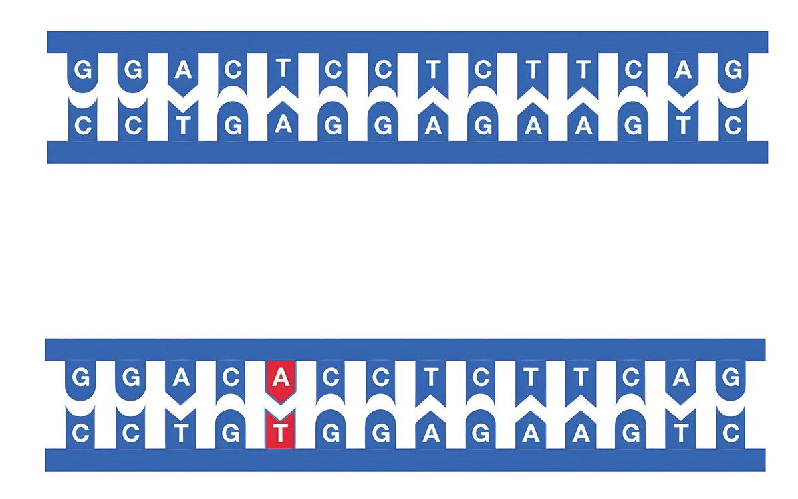
ജീവശാസ്ത്രം - X
മ്യൂൂട്ടേഷൻ (Mutation) ജനിതകഘടനയിൽ ആകസ്മികമായി ഉണ്ടാകുന്നതും അടുത്ത തലമുറയിലേക്ക് കൈമാറ്റം ചെയ്യപ്പെടുന്നതുമായ മാറ്റങ്ങളാണ് മ്യൂൂട്ടേഷൻ.
ചിത്രീകരണം 1.13 മ്യൂൂട്ടേഷൻ DNA യുടെ ഇരട്ടിക്കലിൽ ഉണ്ടാകുന്ന തകരാറുകൾ, ചില പ്രത്യേേക രാസവസ്തുക്കൾ (Chemicals), വികിരണങ്ങൾ (Radiation) തുടങ്ങി യവ മ്യൂൂട്ടേഷന് കാരണമാകാം. മ്യൂൂട്ടേഷൻ ജീനുകളിൽ മാറ്റമുണ്ടാക്കു ന്നു. ഈ ജീനുകൾ തലമുറകളിലൂടെ കൈമാറി സ്വവഭാവവ്യയതിയാനങ്ങളി ലേക്കുനയിക്കുന്നു. ജീവപരിണാമത്തിൽ മ്യൂൂട്ടേഷനുകൾക്ക് വലിയ പ്രാധാന്യയമുണ്ട്.
സൂചകങ്ങൾ y മ്യൂൂട്ടേഷന് y മ്യൂൂട്ടേഷന്റെ കാരണങ്ങൾ y മ്യൂൂട്ടേഷന്റെ പ്രാധാന്യം ബീജസംയോോഗത്തിലെ അലീൽ ചേർച്ച, ക്രോോസിങ് ഓവർ, മ്യൂൂട്ടേ ഷൻ മുതലായവ ജീവികളിൽ വ്യയതിയാനങ്ങള്ക്ക് കാരണമാകുന്നു എന്ന് മനസ്സിലാക്കിയില്ലേ? വ്യയതിയാനങ്ങൾക്ക് കാരണമാകുന്ന പ്രക്രിയകളെക്കുറിച്ച് കൂടുതല് വിവരങ്ങള് ശേഖരിച്ച് സ്ലൈഡ് പ്രസന്റേഷൻ തയ്യാറാക്കൂ. 31

ജീവശാസ്ത്രം - X
ജനിതകശാസ്ത്രം - തൊൊഴിൽസാധ്യയതകൾ തന്മാത്രാ ജനിതകശാസ്ത്രം, ജനസംഖ്യാ ജനിതകശാസ്ത്രം, മെഡി ക്കൽ ജനിതകശാസ്ത്രം, സൈറ്റോോജെനെറ്റിക്സ്, ബിഹേവിയറൽ ജനിതകശാസ്ത്രം, ജീനോോമിക്സ് എന്നിങ്ങനെ വിവിധ ജനിതക ശാസ്ത്ര ശാഖകളുണ്ട്. ജനിതകശാസ്ത്രത്തിലും ബയോോടെക്നോോളജി, മൈക്രോോബയോോളജി, ബയോോഇൻഫോോർമാറ്റിക്സ് തുടങ്ങിയ അനുബന്ധ മേഖലകളിലു മുള്ള ബിരുദ പ്രോോഗ്രാമുകൾ വൈവിധ്യയമാർന്ന തൊൊഴിൽ സാധ്യയത കളിലേക്കുള്ള വാതിലുകൾ തുറക്കുന്നു. ബിരുദാനന്തരതല ത്തിൽ, ജനിതക കൗൗൺസിലിങ്, ജീനോോമിക്സ്, മെഡിക്കൽ ജനറ്റിക്സ്, ഫോോറൻസിക്സയൻസ് എന്നിവയിലെ പ്രത്യേേക പഠ നങ്ങൾ ആരോോഗ്യയ സംരക്ഷണം, ഗവേഷണം, വിദ്യാാഭ്യാാസം എന്നി വക്ക് അവസരങ്ങൾ നൽകുന്നു. പിഎച്ച്ഡി പോോലുള്ള ഉന്നത ബിരുദങ്ങൾ ജനിതകശാസ്ത്രത്തിൽ, അത്യാധുനിക ഗവേഷണം, ഫാർമസ്യൂട്ടിക്കൽസ്, കൃഷി തുടങ്ങിയ വ്യയവസായ മേഖലകളിലെ തൊൊഴിലുകൾക്കായി വിദ്യാാർത്ഥികളെ സജ്ജമാക്കുന്നു. അനേകം പുതിയ കണ്ടെത്തലുകൾക്കും പഠനഗവേഷണങ്ങൾക്കും അന ന്തമായ അവസരങ്ങളുള്ള ജനിതകശാസ്ത്രത്തിൻ്റെ ലോോകം അത്യയ ധികം വിശാലമാണ്. ജീവൻ്റെ നിഗൂഢതകളെക്കുറിച്ച് ജിജ്ഞാസ യുള്ളവർക്ക്, കൂടുതൽ മേഖലകളിലേക്ക് പര്യയവേഷണം ചെയ്യാൻ ഏറെ സാധ്യയതകളുള്ള ശാസ്ത്രശാഖയാണ് ജനിതകശാസ്ത്രം.
ജീവന്റെ രഹസ്യയങ്ങള് അനാവരണം ചെയ്യുന്ന ശാസ്ത്രശാഖയാണ് ജനിതകശാസ്ത്രം. ജീനുകൾ എങ്ങനെ പ്രവർത്തിക്കുന്നു, ഒരു തലമു റയിൽ നിന്ന് അവ അടുത്ത തലമുറയിലേക്ക് എങ്ങനെ കൈമാറ്റം ചെയ്യപ്പെടുന്നു എന്നിവയെക്കുറിച്ച് അറിവ് നൽകാന് ജനിതക ശാസ്ത്രത്തിനായി. ഈ മേഖലയിലെ പുരോോഗതികള് ജനിതക സാ ങ്കേതിക വിദ്യയയുടെ വളർച്ചയ്ക്ക് വഴിവച്ചു. ജീൻ എഡിറ്റിങ്ങുമായി ബന്ധപ്പെട്ട് കുട്ടിയുടെ സംശയത്തിന്റെ ഉത്തരത്തിലേക്ക് നയിക്കുന്ന ചില പടവുകൾ നാം പിന്നിട്ടു. തുടർന്നുള്ള അധ്യാായങ്ങളിലൂടെ കടന്നുപോോകുമ്പോോൾ പൂർണ്ണമായ ഉത്തരത്തിലേക്ക് എത്താനാകും. ജനിതക ശാസ്ത്രത്തിലെ കണ്ടെത്തലുകൾ പരിണാമം എങ്ങനെ എന്ന് മനസ്സിലാക്കാനും വിശദീകരിക്കാനും സഹായിക്കും. വ്യയത്യയ സ്ത ജനിതക പ്രക്രിയകളുടെ സംയോോജനമാണ് ഒരു ജീവിയുടെ സവിശേഷതകളെ നിർണ്ണയിക്കുന്നത്. ഈ പ്രക്രിയകൾ ജീവന്റെ വൈവിധ്യയത്തിനും പരിണാമത്തിനും അടിസ്ഥാനമാണ്. അത് എപ്രകാരമാണെന്ന് അടുത്ത അധ്യാായത്തിൽ മനസ്സിലാക്കാം. 32

ജീവശാസ്ത്രം - X
വിലയിരുത്താം 1.
DNA യുടെയും RNA യുടെയും അടിസ്ഥാന നിര്മ്മാണ യൂണിറ്റുകള് സമാനമാണോോ?
വിശദീകരിക്കുക. 2.
പ്രസ്താവനകൾ വിശകലനം ചെയ്ത് ഉചിതമായത് തിരഞ്ഞെടുക്കുക. i.
F1 ന് ഇരു മാതാപിതാക്കളോോടുംം സാമ്യംം
ii.
F1 ന് മാതാപിതാക്കളിൽ ഒരാളുമായും സാമ്യംം ഇല്ല, ഇരുവർക്കും ഇടയിലുളള സ്വവഭാവം
iii. F1 ന് മാതാപിതാക്കളിൽ ഒരാളുമായി സാമ്യംം a)
i – ഡൊൊമിനന്സ്, ii – ഇന്കംപ്ലീറ്റ് ഡൊൊമിനന്സ്, iii – കോോ-ഡൊൊമിനന്സ്
b)
i – ഇന്കംപ്ലീറ്റ് ഡൊൊമിനന്സ്, ii – ഡൊൊമിനന്സ്, iii – കോോ-ഡൊൊമിനന്സ്
c)
i – കോോ-ഡൊൊമിനന്സ്, ii- ഇന്കംപ്ലീറ്റ് ഡൊൊമിനന്സ്, iii – ഡൊൊമിനന്സ്
d)
i – ഡൊൊമിനന്സ്, ii –കോോ-ഡൊൊമിനന്സ്, iii – ഇന്കംപ്ലീറ്റ് ഡൊൊമിനന്സ്
3. ലൈംഗിക പ്രത്യുൽപാദനം നടത്തുന്ന ജീവികൾ അവരുടെ സന്താനങ്ങള്ക്ക് കൈമാറുന്നത്. a)
എല്ലാ ജീനുകളുംം
b)
അവരുടെ ജീനുകളുടെ പകുതി
c)
അവരുടെ ജീനുകളുടെ നാലിലൊൊന്ന്
d) ജീനുകളുടെ എണ്ണം ഇരട്ടിയാക്കി 4.
പർപ്പിൾ പൂക്കളുള്ള, ഉയരമുള്ള (പ്രകടഗുണം) പയർ ചെടിയെ വെളുത്ത പൂക്കളുള്ള, ഉയരംകുറഞ്ഞ പയർ ചെടിയുമായി (ഗുപ്തഗുണം) വർഗസങ്കരണം നടത്തുന്നു. a)
ഇതിന്റെ ഡൈഹൈബ്രിഡ് ക്രോോസ് ചിത്രീകരിച്ച് F2 അനുപാതം എഴുതുക.
b)
F2 തലമുറയിൽ മാതാപിതാക്കളില് നിന്നും വ്യയത്യയസ്തമായ സ്വവഭാവങ്ങള് പ്രത്യയക്ഷപ്പെട്ടോോ? എന്തുകൊൊണ്ട്?
c)
രണ്ട് ജീനുകളുംം സ്വവതന്ത്രമായി വേര്പിരിയുന്നില്ലെങ്കിൽ F2 അനുപാതത്തെ എങ്ങനെ ബാധിക്കും?
5. ഡൊൊമിനന്സ്, കോോ-ഡൊൊമിനന്സ്, ഇന്കംപ്ലീറ്റ് ഡൊൊമിനന്സ് എന്നിവ എപ്രകാരം വ്യയത്യാസപ്പെട്ടിരിക്കുന്നു? 6. മോോണോോഹൈബ്രിഡ്,
ഡൈഹൈബ്രിഡ് ക്രോോസുകൾ വ്യയത്യയസ്ത ഫിനോോടൈപിക് അനുപാതങ്ങൾ ഉണ്ടാക്കുന്നു. എന്തുകൊൊണ്ട്? സ്വവഭാവഗുണങ്ങളുടെ പാരമ്പര്യയത്തെക്കുറിച്ച് ഇത് നല്കുന്ന സൂചന എന്ത്?
7.
ചില സ്വവഭാവങ്ങള്ക്ക് കാരണമായ ജീനിന് രണ്ടിലധികം അലീലുകള് ഉണ്ടെങ്കിലും ഒരു വ്യയക്തിയിൽ പ്രസ്തുത ജീനിന് രണ്ട് അലീലുകൾ മാത്രമാണുള്ളത്. എന്തുകൊൊണ്ട്?
33
ജീവശാസ്ത്രം - X 8.
DNAയിൽ പ്രോോട്ടീന് നിര്മ്മാണത്തിനുള്ള എല്ലാ ജനിതക
വിവരങ്ങളുംം അടങ്ങിയിട്ടുണ്ടെങ്കിലും പ്രോോട്ടീൻ നിര്മ്മാണ ത്തിന് RNA ആവശ്യയമായി വരുന്നു. എന്തുകൊൊണ്ട്? 9. മനുഷ്യയനിലെ
ABO രക്തഗ്രൂപ്പ് സംവിധാനത്തില് ഗ്രൂപ്പ് നിർണ്ണയിക്കപ്പെടുന്നതില് കോോഡോോമിനൻസും മൾട്ടിപ്പിൾ അലീലിസവും എങ്ങനെ പ്രവര്ത്തിക്കുന്നു? വിശദീകരിക്കൂ.
10. സ്ത്രീകളിൽ രൂപം കൊൊള്ളുന്ന എല്ലാ അണ്ഡകോോശങ്ങളിലും ഒരു തരം ലിംഗനിര്ണ്ണയ ക്രോോമസോോമാണുള്ളത്. എന്തുകൊൊണ്ട്?
തുടര്പ്രവര്ത്തനങ്ങള് 1. ന്യൂക്ലിയോോടൈഡുകളെ സൂചിപ്പിക്കുന്നതിന് നിറമുള്ള മുത്തു
കളോോ പേപ്പർ സ്ട്രിപ്പുകളോോ ഉപയോോഗിച്ച് ട്രാൻസ്ക്രിപ്ഷൻ, ട്രാന്സ്ലേഷന് എന്നീ പ്രക്രിയകള് ക്ലാസിൽ അവതരിപ്പിക്കൂ. 2.
ജനിതകശാസ്ത്രത്തിന്റെ വളര്ച്ചയിലെ പടവുകള് ഉള്പ്പെടുത്തി ടൈം ലൈന് അനിമേഷന് തയ്യാറാക്കി ക്ലാസില് അവതരിപ്പിക്കൂ.
3.
അലീലുകളെ പ്രതിനിധീകരിക്കാൻ ഡൈസ് അല്ലെങ്കിൽ മുത്തുകൾ ഉപയോോഗിച്ച് മെൻഡലിന്റെ പയർ ചെടിയിലെ വർഗസങ്കരണ പരീക്ഷണം അവതരിപ്പിക്കൂ.
4. വ്യയത്യയസ്ത
ജീവിവർഗങ്ങളിലെ ലിംഗനിർണ്ണയം അതില് പാരിസ്ഥിതിക ഘടകങ്ങളുടെ സ്വാധീനം എന്നിവ എങ്ങനെ യെന്ന് വിവരശേഖരണം നടത്തി കണ്ടെത്തി നിഗമനം രൂപീകരിക്കൂ.
5. ത്വവക്കിന്റെ നിറവ്യയത്യാസത്തിന്റെ ശാസ്ത്രീയവും, സാമൂഹികവും
സാംസ്കാരികവുമായ തലങ്ങൾ ചർച്ചചെയ്യൂ.
34